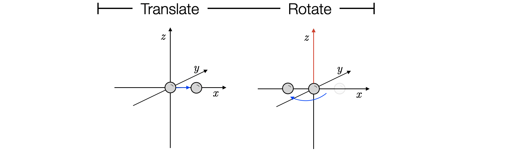

Species¶
autodE provides Molecule classes built from a base Species class. A Species needs to be initialised from a name, set of atoms (or possibly None), charge and spin multiplicity
>>> from autode.species import Species
>>> species = Species(name='species', atoms=None, charge=0, mult=1)
>>> species.n_atoms
0
Atoms are a list of Atom objects and can be used to initialise a species i.e.
>>> from autode.atoms import Atom
>>> h2 = Species(name='H2', charge=0, mult=1, atoms=[Atom('H'), Atom('H')])
>>> h2.n_atoms
2
Atoms contain a coordinate as a numpy array (shape = (3,), initialised at the origin) and a label
>>> atom1, atom2 = h2.atoms
>>> atom1
[H, 0.0000, 0.0000, 0.0000]
>>> atom1.coord
array([0., 0., 0.])
>>> atom1.label
'H'
Rotation and Translation¶
Atoms can be translated and rotated e.g. to shift the first hydrogen atom from the origin along 1 Å in the x axis then rotate in the z-axis
>>> import numpy as np
>>> vector = np.array([1.0, 0.0, 0.0])
>>> atom1.translate(vector)
>>> atom1.coord
array([1., 0., 0.])
To rotate this atom 180° (π radians) in the z-axis at the origin
>>> atom1.rotate(theta=np.pi, axis=np.array([0.0, 0.0, 1.0]))
>>> atom1.coord
array([-1., 0., 0.])
Note
Rotations are performed anticlockwise
Translations and rotations are performed in place so the h2 atoms are modified
>>> h2.atoms
[[H, -1.0000, 0.0000, 0.0000], [H, 0.0000, 0.0000, 0.0000]]
Solvents¶
Species also support an solvent which need not be specified for a species in the gas phase
>>> h2.solvent is None
True
For example, to initialise a fluoride ion in dichloromethane
>>> f = Species(name='F-', charge=-1, mult=1, atoms=[Atom('F')], solvent_name='DCM')
>>> f.solvent
<autode.solvent.solvents.Solvent object at XxXXXXXX>
Given a solvent name string a Solvent is added as an attribute to the species. A Solvent contains a set of aliases and names of the implicit solvent in different electronic structure theory packages e.g.
>>> f.solvent.g09
'Dichloromethane'
>>> f.solvent.xtb
'CH2Cl2'
Species from Files¶
Species may be initialised from xyz files using the io module
>>> from autode.input_output import xyz_file_to_atoms
>>> methane = Species(name='CH4', charge=0, mult=1,
>>> atoms=xyz_file_to_atoms('methane.xyz'))
>>> methane.n_atoms
5
Note
Only .xyz files are supported currently. Other molecular file formats can be converted to .xyz with openbabel